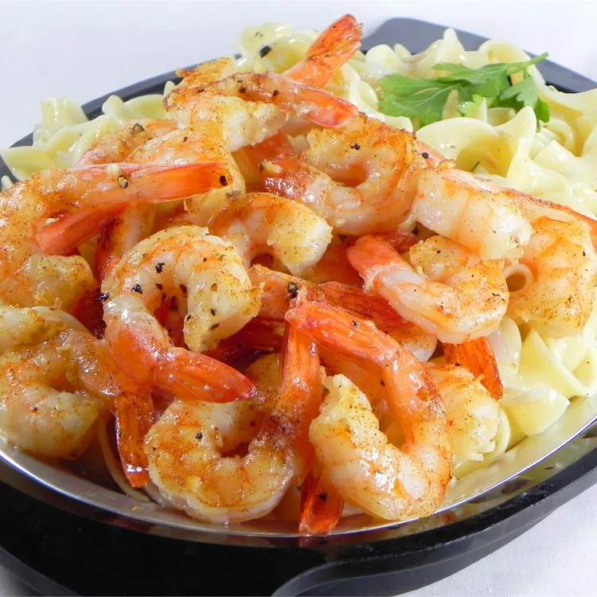

Sexy Shrimp Scampi

A luscious and flavorful twist on classic shrimp scampi
This dish is a luscious and flavorful twist on the classic shrimp scampi. Tender shrimp is sautéed in a buttery garlic and white wine sauce, with a hint of lemon, and a touch of heat from red pepper flakes. It is then served over a bed of al dente linguine or spaghetti, garnished with fresh parsley and grated Parmesan cheese. Seductive Shrimp Scampi is a perfect dish for a romantic dinner for two or a special occasion, and is sure to leave your taste buds wanting more.
Ingredients
- 30 medium shrimp - peeled and deveined
- 2 tablespoons olive oil
- 2 tablespoons butter, melted
- 2 cloves garlic, minced
- ½ teaspoon kosher salt
- ¼ teaspoon ground black pepper
Steps
- Preheat an oven to 350 degrees F (175 degrees C).
- Toss the shrimp in a bowl with the olive oil, melted butter, garlic, salt, and pepper; set aside for 10 minutes. Arrange the shrimp in a circular pattern in a round casserole dish.
- Bake in the preheated oven until the shrimp are pink and cooked through, about 15 minutes.